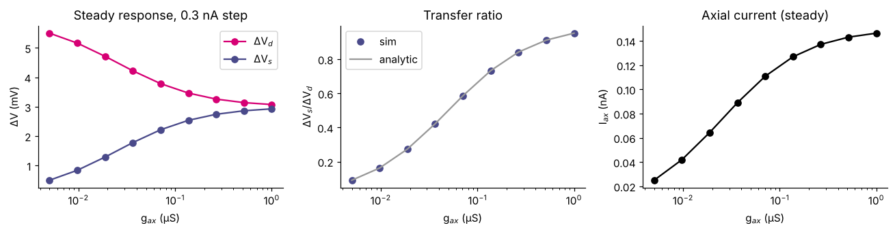
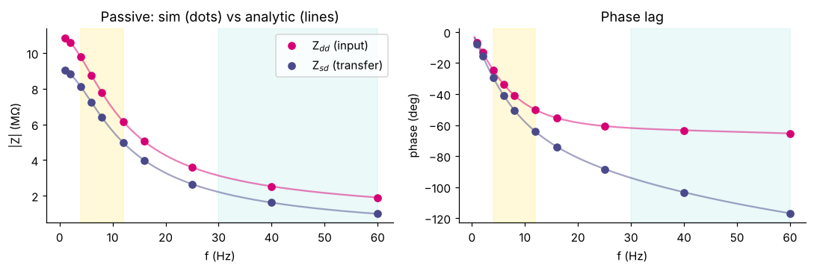
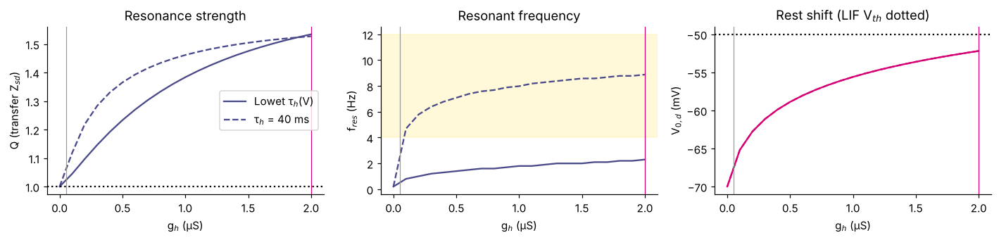
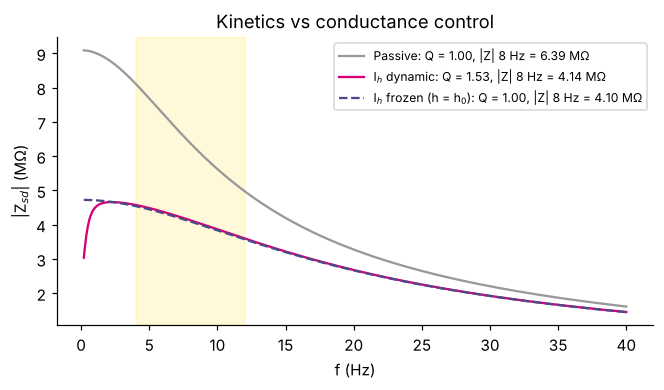
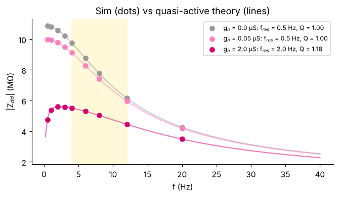
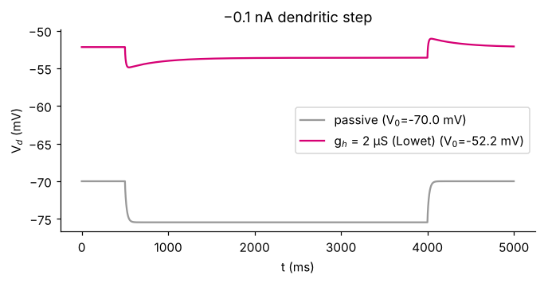

Theta Resonance in CA1 Pyramidal Neurons: from Two Compartments to a Reconstructed Cell
Rebecca Goodman · v1.0, 2 Nov 2026 · Advanced · plain-language versions of each idea are on Learn.
1 · Introduction
1. Introduction
CA1 pyramidal neurons are the principal output of the hippocampus. During exploration their inputs are organized by theta (4–12 Hz) and gamma (30–100 Hz) oscillations, and place cells fire at systematically shifting theta phases as an animal crosses a place field. How a single cell's membrane converts rhythmic input into spikes is therefore part of how the hippocampus represents space.
Two intrinsic mechanisms give CA1 cells a preferred input frequency. Hyperpolarization-activated HCN channels (Ih), whose density rises more than sixfold along the apical dendrite (Magee 1998), produce resonance at hyperpolarized potentials; Kv7 channels (IM), amplified by persistent sodium current (INaP), produce resonance near threshold (Hu, Vervaeke & Storm 2002). Resonance frequency also varies more than threefold between soma and distal dendrites and is plastic (Narayanan & Johnston 2007).
Detailed conductance-based models reproduce these properties and further show that bursts and single spikes can couple to different rhythms (Lowet et al. 2023) and have distinct resonance curves controlled by gNaP, gKdr and gh (Ceballos et al. 2025). What is less clear is which of these behaviours require that detail and which follow from simpler ingredients.
Aim. Build models of increasing complexity and, at each step, ask what the added mechanism explains and what remains unexplained.
| Hypothesis | Test | Outcome so far |
|---|---|---|
| H1. Passive membrane and axial coupling explain theta > gamma responses without resonance. | Analytic and simulated impedance, passive model | supported |
| H2. Dendritic Ih is sufficient for subthreshold theta resonance. | ḡh and τh sweeps; frozen-gate control | only with fast τh; not with Lowet's kinetics |
| H3. Somatic IM + INaP give theta resonance near threshold. | Somatic impedance at −80, −70, −60 mV | supported (5 Hz at −60 mV) |
| H4. A reduced model reproduces burst vs single-spike frequency preferences. | Burst classification and PPC (Lowet's definitions) | not testable yet: no burst mechanism |
2 · Methods
2.1 Model equations
Two isopotential compartments. Each equation is current balance: capacitive current equals the sum of all currents entering the compartment. Currents are in nA, so a term divided by C (nF) gives mV/ms.
flowchart TB
IN["Rhythmic input from CA3 or entorhinal cortex"] --> D["Dendrite V_d: leak, capacitance, Ih"]
D -->|"axial current g_ax"| S["Soma V_s: leak, capacitance, optional I_M and I_NaP"]
D -. "slow Ih push-back" .-> D
S -. "slow I_M push-back" .-> S
S --> T{"V_s above -50 mV?"}
T -->|"yes"| SP["Spike, reset to -65 mV"]
T -->|"no"| SUB["Subthreshold response: impedance Z"]
SP --> OUT["Spike phase, PPC, burst fraction"]
How a signal moves through the model. Dotted loops are the slow restoring currents that can turn a filter into a resonator.
Dendrite compartment d · receives the input
Soma compartment s · spike output
Spike rule (only when spiking=True): if Vs ≥ Vth = −50 mV, record a spike, set Vs = Vreset = −65 mV, and hold it there for tref = 2 ms. Note the axial term has the opposite sign to the dendrite's: that is current conservation.
Ih gate Lowet et al. 2023, HHca2 dendrite
| V (mV) | −90 | −80 | −70 | −60 | −52 (rest) | −40 |
|---|---|---|---|---|---|---|
| τh (ms) | 1603 | 3344 | 2872 | 1361 | ≈ 690 | 230 |
| h∞ | 0.64 | 0.40 | 0.20 | 0.09 | 0.042 | 0.013 |
h∞ falls as the membrane depolarizes, so Ih shuts off when V rises and opens when it falls. Because it reacts slowly (τh), it opposes slow changes but cannot follow fast ones. That delayed opposition is what can create a resonance peak. ih_kinetics="simple" replaces τh(V) with a constant 40 ms for comparison.
Noise Euler–Maruyama, dt = 0.025 ms
σ is a white-noise current amplitude in nA·ms½. Each trial uses its own seed (seed0 + k), so every noisy run can be reproduced exactly.
Params()
2.2 Symbols and values
Values are totals per compartment. Lowet's HHca2 is written per cm² with C = 1 µF/cm²; with an area of 10⁻³ cm² its numbers carry over unchanged (1 mS/cm² → 1 µS, 1 µF/cm² → 1 nF).
| Symbol | Params field | Default | Unit | Meaning | Lowet HHca2 |
|---|---|---|---|---|---|
| Cs, Cd | C_s, C_d | 1.0 | nF | Membrane capacitance | 1 µF/cm² |
| gL,s, gL,d | gL_s, gL_d | 0.05 | µS | Leak conductance | 0.05 mS/cm² |
| EL | E_L | −70 | mV | Leak reversal | −70 mV |
| gax | g_ax | 0.25 | µS | Axial coupling (gives your 0.833 ratio) | Gsd = Gds = 0.2 |
| ḡh | g_h | 0 (Lowet 2.0) | µS | Max Ih conductance | 2.0 mS/cm² |
| Eh | E_h | −32.9 | mV | Ih reversal | −32.9 mV |
| V½, k | Vh_half, k_h | −84, 10.2 | mV | h∞ midpoint and slope | same |
| τh | ih_kinetics, tau_h | "lowet2023" (40) | ms | Gate time constant: V-dependent, or constant for "simple" | V-dependent |
| — | freeze_h | False | — | Hold h at its rest value (kinetics control) | — |
| — | tau_h_scale | 1.0 | — | Multiplies τh(V); ÷3 ≈ room → body temperature | — |
| gM, θz, σz, τz | g_M, theta_z, sigma_z, tau_z | 0, −39, 5, 75 | µS, mV, mV, ms | Somatic M-current (optional) | Gm 1 (Ceballos 2.4) |
| gNaP, θp, σp | g_NaP, theta_p, sigma_p | 0, −47, 3 | µS, mV, mV | Somatic persistent Na+ (optional) | Gnap 0.3 (Ceballos 0.9) |
| Vth, Vreset, tref | V_th, V_reset, t_ref | −50, −65, 2 | mV, mV, ms | LIF threshold, reset, refractory (spiking=True) | full HH soma |
| σs, σd | sigma_s, sigma_d | 0 | nA·ms½ | White-noise amplitude per compartment | soma only, D = 0.1 |
| Δt | dt | 0.025 | ms | Integration step | 0.01 ms, RK4 |
| Derived quantity | Formula | Value (passive defaults) |
|---|---|---|
| Membrane time constant | τm = C / gL | 20 ms |
| DC voltage transfer, dendrite → soma | ΔVs/ΔVd = gax / (gax + gL,s) | 0.25 / 0.30 = 0.833 |
| Dendritic input resistance | Zdd(0) = (gL + gax) / [gL(gL + 2gax)] | 10.9 MΩ |
| Transfer resistance | Zsd(0) = gax / [gL(gL + 2gax)] | 9.09 MΩ |
2.3 Reconstructed-cell model
A CA1 pyramidal cell reconstruction (Jarsky, Roxin, Kath & Spruston 2005; ModelDB 116084; 153 sections, 9.7 mm of dendrite, apical extent ~620 µm) was divided into compartments of at most 20 µm (571 compartments). Each obeys the discrete cable equation CidVi/dt = −Iion,i + Σj gij(Vj − Vi) + Iinj,i, solved by backward Euler with the Hines tree algorithm and exponential-Euler gates (dt 0.025 ms). Impedance was computed by the same tree solver in complex arithmetic after linearizing every channel at the exact resting state.
| Parameter | Value | Note |
|---|---|---|
| Rm, Cm, Ra | 30 kΩ·cm², 1 µF/cm², 150 Ω·cm | Typical CA1 modelling values, not fitted to this cell |
| Spines | membrane area × 2 beyond 100 µm | Standard area correction |
| Soma | 20 µm sphere | The converted outline is a 12 µm placeholder circle |
| Ih density | 0.05 mS/cm², rising linearly 6× by 350 µm on the apical tree | Magee 1998 gradient |
| Ih gating | V½ −90 mV, k 8.5 mV, Eh −30 mV, bell-shaped τh(V), peak 40 ms at −75 mV | Fast HCN1-like kinetics; Lowet's τh available as an option |
| Spikes | Traub–Miles Na+/Kdr (50/10 mS/cm²) at soma and first 50 µm | Spike timing only; no after-hyperpolarization |
Engines: ca1_morph.py (NumPy) and the browser engine of the Lab produce identical results (rest −63.40 mV, somatic input resistance 66.1 MΩ in both).
2.4 Measurements
In plain terms. Impedance = mV of response per nA of input, at each frequency; Q measures how pronounced the peak is. Break it down →
Impedance impedance_sweep, analytic_Z
The input is a dendritic sinusoid. After the transient has decayed, the voltage over exactly 10 cycles is projected onto the input frequency (a lock-in). |Z| is the gain in MΩ (mV per nA), and arg Z is the phase lag. Zdd is measured at the dendrite (input impedance), and Zsd at the soma for the same dendritic input (transfer impedance).
For the passive model, the closed form uses y = gL + iωC with ω = 2πf / 1000 in rad/ms:
With Ih, linearizing around rest V0 adds two terms to the dendritic admittance (quasi-active approximation):
Both factors in the numerator of the last term are negative, so the term is positive: a conductance that only acts on inputs slower than τh. It suppresses slow inputs, and the membrane capacitance suppresses fast ones, leaving a band in between. freeze_h=True keeps the extra-conductance term and drops the delayed one.
| Measure | Definition | Reading it | Function |
|---|---|---|---|
| Resonance strength Q | |Z(fres)| / |Z(fmin)| | Q = 1 is low-pass; Q > 1 is a real preferred frequency | resonance_metrics |
| Resonant frequency fres | argmaxf |Z(f)| | Where the peak sits; at fmin means no peak | resonance_metrics |
| Transfer ratio | ΔVs / ΔVd at steady state | Voltage amplitudes, not fraction of current transferred | axial_sweep |
| Sag ratio | (Vss − Vpeak) / (Vbase − Vpeak) | 0 = no Ih rebound; larger = more Ih. Vss is the mean of the last 50 ms of the step | sag_ratio |
| PPC | (N R² − 1) / (N − 1), R = |mean eiφk| | 0 = no locking, 1 = perfect; unbiased by spike count, unlike R | ppc |
| Burst spike | Either neighbouring ISI < 14.6 ms (12 samples at 820 Hz) | Lowet's rule, so model and imaging data are classified the same way | classify_bursts |
2.5 Where each equation comes from
Your model borrows from three published CA1 models from the same research line: Golomb et al. 2006 (soma currents), Lowet et al. 2023 (adds a dendrite with Ih), and Ceballos et al. 2025 (resonance of spikes vs bursts). The table gives the exact source of each piece and why the reduced model keeps or simplifies it.
| Equation in this model | Exact source | Why it is used here | What is simplified |
|---|---|---|---|
| Current balance C dV/dt = −Σ I | Hodgkin & Huxley 1952; same form in all three models (Ceballos 2025 Methods: C dV/dt = −gL(V − EL) − Σ Ij + Iapp) | Charge conservation; the base of every conductance model | Nothing |
| Leak −gL(V − EL), gL = 0.05, EL = −70 | Lowet HHca2: Gl = 0.05, Vl = -70 (ca1.ipynb); Golomb lineage. Ceballos Methods: gL = 0.04 | Sets τm = 20 ms, the passive filter every other result is compared against | Kept as is |
| Axial coupling gax(Vd − Vs) | Two-compartment reduction of Pinsky & Rinzel 1994. Lowet HHca2: Gsd = Gds = 0.2; Ceballos: Iac = gac(Vi − Vi+1), gac = 0.2 mS/cm² | Lets a dendritic input reach the soma with realistic attenuation | gax = 0.25 chosen to match your 0.833 ratio. Equal areas assumed; Lowet's MATLAB version (dXdT_HH_3.m) uses unequal fractions, p = 0.15 |
| Ih = ḡh h (Vd − Eh), Eh = −32.9 | Lowet HHca2: Ih2 = Gh2*h2*(v2 - Vh2), Gh2 = 2, Vh2 = -32.9. Ceballos uses ḡh = 8.46 in the dendrite | The candidate resonance mechanism in the dendrite | One gate, no dendritic gradient (real density rises more than sixfold, Magee 1998) |
| h∞ = 1/(1 + e(V+84)/10.2) | Lowet HHca2: h2_inf | Opens with hyperpolarization, closes with depolarization: the restoring action that can create resonance | Kept as is |
| τh = 1/(e−17.9−0.116V + e−1.84+0.09V) + 0.1 | Lowet HHca2: tauh2. The Ceballos code repository (interleaved_resonance/code.ipynb) has only the single-compartment HHca, so HHca2 is the available implementation | Sets where the resonance peak sits | Origin of these coefficients is not cited in the notebook. Temperature not specified; tau_h_scale lets you test it |
| Somatic LIF threshold/reset (−50 → −65 mV, 2 ms) | Standard integrate-and-fire; your Brian2 notebooks use −50/−65 | Cheapest spike generator, so subthreshold questions stay clean | Replaces Golomb's INaT, IKdr, IA; cannot burst or shape the spike |
| IM = gM z (Vs − EK), z∞: θ −39, σ 5; τz 75 ms | Golomb 2006 (ModelDB 66268); Lowet/Ceballos HHca: Gm = 1, thetaz = -39, deltaz = 5, tauz = 75. Ceballos Methods: gKM = 2.4 | Slow K+ current: Hu 2002's M-resonance and Golomb's burst switch | Optional; off by default |
| INaP = gNaP p∞(V)(V − ENa), θ −47, σ 3 | Golomb 2006; HHca: Gnap = 0.3 ("varies between 0 and 0.41"), thetap = -47. Ceballos Methods: gNaP = 0.9 | Amplifies resonance near threshold (Hu 2002) | Instantaneous gate, as in the source |
| Noise √Δt · σ/C · ξ | Euler–Maruyama. Lowet: np.random.randn()*np.sqrt(2*self.D*dt) on the soma, D = 0.1 | Background synaptic activity | Lowet's D maps to σ = √(2D) on the soma |
| Quasi-active impedance | Koch 1984; Hutcheon & Yarom 2000 | Predicts resonance from the equations without simulating; checked against simulation in Fig. 5 | Valid for small inputs only |
| Burst rule, ISI < 14.6 ms | Lowet figure3_ISI.m: wind = 12 samples at 820 Hz. Ceballos: ISI < 14 ms | Same definition as the data you will compare with | None |
| PPC | Lowet spike_field_ppc_adj.m; Vinck et al. 2010 | Phase locking that does not inflate with few spikes | Phase taken from the injected sine, not an LFP |
2.6 How the four models compare
| Golomb et al. 2006 | Lowet et al. 2023 (HHca2) | Ceballos et al. 2025 | This reduced model | |
|---|---|---|---|---|
| Compartments | 1 (soma) | 2 (soma + dendrite) | 1, then 2 for Ih | 2 |
| Spike generation | INaT, IKdr | Golomb soma + Ca2+ currents | Same as Lowet | LIF threshold/reset |
| Slow currents | INaP, IM, IA | INaP 0.3, IM 1, IA 1.4, sAHP, Ca-K | INaP 0.9, IM 2.4, IA 2.8, Ca 0.17 | Optional IM, INaP |
| Dendritic Ih | None | ḡh = 2 | ḡh = 8.46 | ḡh 0–2 (was 0.05) |
| Coupling | — | 0.2 | 0.2 | 0.25 |
| Leak | 0.05 | 0.05 | 0.04 | 0.05 |
| Units | per cm² | per cm² | per cm² | totals (nF, µS) = per cm² × 10⁻³ cm² |
| Code | XPPAUT, ModelDB 66268 | HanLabBU/Lowet-Cell-Reports-2023 | rodrigo-pena-lab/interleaved_resonance | ca1_reduced.py |
Your Brian2 comparison notebook (ceballos_2025_soma_dendrite_lif_parameter_comparison_brian2.ipynb) uses 20,000 µm² per compartment: 200 pF, gL 8 nS and gax 40 nS from the article. That is 0.2× the area used here, so its absolute impedances are 5× larger, while τm (25 ms with the article's leak) and resonance frequencies are unaffected.
| Dendrite parameters in this model | Rest Vd (mV) | τh at rest | fres (Zsd) | Q |
|---|---|---|---|---|
| Lowet: ḡh 2, gL 0.05, gax 0.25 | −52.2 | 687 ms | 2.2 Hz | 1.53 |
| Lowet, τh ÷ 3 | −52.2 | 229 ms | 3.9 Hz | 1.74 |
| Lowet, τh ÷ 9 | −52.2 | 76 ms | 6.6 Hz | 1.66 |
| Ceballos: ḡh 8.46, gL 0.04, gac 0.2 | −44.2 | 336 ms | 3.3 Hz | 1.62 |
| Ceballos, τh ÷ 3 | −44.2 | 112 ms | 5.7 Hz | 1.62 |
| Ceballos, τh ÷ 9 | −44.2 | 37 ms | 9.5 Hz | 1.45 |
Ceballos's larger ḡh pushes the dendrite to −44 mV when nothing in the soma holds it down. In their full model, somatic K+ currents do that job. Ion-channel kinetics typically speed up 3–4× per 10 °C, so ÷3 is a rough stand-in for warming from room to body temperature.
2.7 Numerics, validation and availability
| Check | Criterion | Result |
|---|---|---|
| Uncoupled compartments | gax = 0: soma does not move | max |ΔVs| = 0 |
| Steady transfer ratio | equals gax/(gax+gL) | exact to 3 decimals at 5 couplings |
| Time-step convergence | |Zsd(8 Hz)| stable as dt halves | 6.394 → 6.386 MΩ (dt 0.1 → 0.0125 ms) |
| Theory vs simulation (passive) | |Z| agrees across 1–40 Hz | within 0.01 MΩ |
| Theory vs simulation (IM + INaP, −60 mV) | |Zss| agrees at 1–12 Hz | within 0.3% |
| Python vs browser engine (reconstructed cell) | same rest, Rin, step response | identical to 0.01 mV |
Software and data. All code (Python 3, NumPy, Matplotlib) and morphology files are listed on the Reproduce page with the script and expected numbers for each figure. Source models: Lowet et al. 2023 (GitHub), Ceballos et al. 2025 (GitHub), Golomb et al. 2006 (ModelDB 66268), Jarsky et al. 2005 (ModelDB 116084).
3 · Results
3.1 Passive dendrites can only low-pass
In plain terms. A passive membrane favours slow inputs but never peaks; theta beats gamma here because of the capacitor alone. Break it down →
- Model
- Params() defaults, gh = 0
- Coupling test
- +0.3 nA dendritic step, 100–600 ms; read at 599 ms
- gax values
- 9 log-spaced, 0.005–1.0 µS
- Impedance test
- 0.02 nA sinusoid, 1–60 Hz, 10 cycles after transient
- Pass criteria
- soma flat at gax = 0; ratio = analytic; stable as dt halves


p = m.Params() # (a) uncoupled control: soma must not move r = m.simulate(replace(p, g_ax=0.0), T=400, I_d=m.step_current(0.3, 100, 300)) print(np.abs(r["Vs"] - r["V0"][0]).max()) # 0.0 # (b) coupling sweep vs analytic ratio for row in m.axial_sweep(p, np.geomspace(0.005, 1.0, 9)): print(f"{row['g_ax']:.3f} sim {row['ratio']:.3f} theory {row['ratio_analytic']:.3f} I_ax {row['I_ax_ss']:.3f} nA") # (c) dt convergence print(m.dt_convergence(p, lambda q: abs(m.impedance_sweep(q, [8])[1][0]))) # (d) impedance: simulation vs closed form freqs = np.array([1, 2, 4, 6, 8, 12, 16, 25, 40, 60]) Zdd, Zsd = m.impedance_sweep(p, freqs, A=0.02) Zdd_th, Zsd_th = m.analytic_Z(p, freqs) print(np.c_[freqs, abs(Zsd), abs(Zsd_th)].round(2))
3.2 Ih creates resonance; its kinetics decide where
In plain terms. Ih's conductance lowers the response; its slowness makes the peak. Lowet's slow gate puts the peak near 2 Hz, not theta. Break it down →
- Sweep
- ḡh = 0–2 µS in 21 steps
- Kinetics
- Lowet τh(V) vs constant 40 ms
- Rest
- exact, from
rest_state(τh is too slow to settle) - Frequencies
- 0.2–40 Hz, 400 points (theory); 0.5–20 Hz simulated check
- Control
freeze_h=True: same rest and conductance, no kinetics- Sag test
- −0.5 nA dendritic step, 500–4000 ms

| Condition | V0,d / V0,s (mV) | fres | Q (Zsd) | |Zsd| 8 Hz (MΩ) | |Zsd| 40 Hz (MΩ) |
|---|---|---|---|---|---|
| Passive | −70.0 / −70.0 | none | 1.00 | 6.39 | 1.61 |
| ḡh 0.05, Lowet τh | −67.0 / −67.5 | none | 1.02 | — | — |
| ḡh 0.5 | −58.9 / −60.7 | 1.4 Hz | 1.23 | — | — |
| ḡh 1.0 | −55.6 / −58.0 | 1.8 Hz | 1.38 | — | — |
| ḡh 2.0, Lowet τh | −52.2 / −55.2 | 2.3 Hz | 1.53 | 4.14 | 1.45 |
| ḡh 2.0, h frozen | −52.2 / −55.2 | none | 1.00 | 4.10 | 1.45 |
| ḡh 2.0, τh = 40 ms | −52.2 / −55.2 | 8.9 Hz | 1.53 | — | — |



p = m.Params() f = np.linspace(0.2, 40, 400) # (a) g_h sweep for both kinetics for kin in ("lowet2023", "simple"): for gh in (0.05, 0.5, 1.0, 2.0): q = replace(p, g_h=gh, ih_kinetics=kin) Vs0, Vd0, h0 = m.rest_state(q) Zdd, Zsd = m.analytic_Z(q, f, V0_d=Vd0) print(kin, gh, round(Vd0, 1), m.resonance_metrics(f, Zsd)) # (b) kinetics vs conductance control for label, q in {"dynamic": replace(p, g_h=2.0), "frozen": replace(p, g_h=2.0, freeze_h=True)}.items(): Zsd = m.analytic_Z(q, f)[1] print(label, m.resonance_metrics(f, Zsd), abs(Zsd[np.argmin(abs(f - 8))])) # (c) check theory by simulation (dt 0.1 ms is enough here) q = replace(p, g_h=2.0, dt=0.1) freqs = np.array([0.5, 1, 2, 3, 4, 6, 8, 12, 20]) Zdd_sim, _ = m.impedance_sweep(q, freqs, A=0.01) print(np.c_[freqs, abs(Zdd_sim), abs(m.analytic_Z(q, freqs)[0])].round(2)) # (d) sag print(m.sag_ratio(replace(p, g_h=2.0), amp=-0.5, t_on=500, dur=3500))
- Next: a 2-D map of Q and fres over τh scale × ḡh, and how gax changes the dendritic peak (Zdd) relative to the somatic one (Zsd).
- Next: replace Lowet's kinetics with the Ceballos 2025 parameter set and rerun this section unchanged.
3.3 Theta, gamma and noise
In plain terms. The same input gives a smaller swing at gamma than at theta. Ih trims theta more than gamma (35% vs 10%) by adding conductance, not by resonating, and the noise tested was too weak to matter. Break it down →
- Input
- 0.05 nA dendritic sinusoid, I0 = 0
- Frequencies
- 8 Hz (theta), 40 Hz (gamma), tested separately
- Conditions
- passive or ḡh = 2; σd = 0 or 0.01 nA·ms½
- Duration
- 3 s per trial, dt 0.05 ms; analyse t > 1 s
- Trials
- 10 seeds (0–9) per noisy condition
| f | Condition | Amp Vd (mV) | Amp Vs (mV) | SD Vd (mV) | SD Vs (mV) |
|---|---|---|---|---|---|
| 8 Hz | Passive | 0.389 | 0.319 | 0.275 | 0.226 |
| 8 Hz | Passive + noise | 0.389 | 0.319 | 0.276 ± 0.003 | 0.227 |
| 8 Hz | Ih | 0.252 | 0.207 | 0.178 | 0.146 |
| 8 Hz | Ih + noise | 0.252 | 0.207 | 0.179 ± 0.002 | 0.147 |
| 40 Hz | Passive | 0.126 | 0.081 | 0.089 | 0.057 |
| 40 Hz | Passive + noise | 0.126 | 0.081 | 0.091 ± 0.001 | 0.059 |
| 40 Hz | Ih | 0.114 | 0.073 | 0.080 | 0.052 |
| 40 Hz | Ih + noise | 0.114 | 0.073 | 0.082 ± 0.000 | 0.052 |
- Amp is the deterministic oscillation amplitude (|Z| × 0.05 nA). SD is the standard deviation of V over t > 1 s, mean ± SD across seeds.
- Ih lowers the 8 Hz response by 35% (0.389 → 0.252 mV) but the 40 Hz response by only 10% (0.126 → 0.114 mV). The frozen-h control shows this is the extra conductance, not resonance.
- Adding σ = 0.01 nA·ms½ changes SD by under 0.003 mV. The noise was too weak to test, which is different from noise not mattering.
p = m.Params()
conds = {"Passive": (0.0, 0.0), "Passive+noise": (0.0, 0.01),
"Ih": (2.0, 0.0), "Ih+noise": (2.0, 0.01)}
for f_hz in (8, 40):
for label, (gh, sig) in conds.items():
q = replace(p, g_h=gh, sigma_d=sig, dt=0.05)
sd = m.noise_trials(q, T=3000, n_trials=10 if sig else 1, f_hz=f_hz, A=0.05)
Zdd, Zsd = m.impedance_sweep(replace(q, sigma_d=0.0), [f_hz], A=0.05)
print(f_hz, label, "amp Vd %.3f amp Vs %.3f SD Vd %.3f" %
(abs(Zdd[0]) * 0.05, abs(Zsd[0]) * 0.05, sd[:, 0].mean()))
# Next: sweep noise strength (log-spaced) at 8 Hz with Ih
for sig in (0.01, 0.03, 0.1, 0.3, 1.0):
sd = m.noise_trials(replace(p, g_h=2.0, sigma_d=sig, dt=0.05), T=3000, n_trials=10)
print(sig, sd.mean(axis=0).round(3)) # mean SD of (Vd, Vs)3.4 Spike output with Lowet's own metrics
In plain terms. Amplitude × impedance = voltage; voltage against threshold decides spiking, so subthreshold preferences carry over into spike timing. Break it down →
PPC and the burst rule are ported from the voltage_imaging MATLAB scripts, so the model output can be compared directly with their data, including the 8 vs 40 Hz opto experiments in figure6_*.
- Model
- ḡh = 2,
spiking=True, σd = 0.1, dt 0.05 ms - Dendritic drive
- 2.0 nA + 0.5 nA sinusoid
- Somatic hold
- −0.2 nA (cf. Lowet's negative somatic stim)
- Window
- 6 s, spikes after 1 s counted (5 s)
- Seed
- 1
| Drive | Spikes (5 s) | Rate (Hz) | PPC | Preferred phase | Burst fraction |
|---|---|---|---|---|---|
| 8 Hz | 121 | 24.2 | 0.43 | 73° | 0.00 |
| 40 Hz | 200 | 40.0 | 0.98 | 164° | 0.00 |
At 40 Hz the cell fires exactly once per cycle, which is why PPC is near 1. The rates differ, so this is not yet a fair comparison: next, compare PPC at matched firing rate. The LIF reset rule cannot produce complex-spike bursts, so reproducing Lowet's burst/theta vs single-spike/gamma split needs a richer spike generator.
q = replace(m.Params(), g_h=2.0, spiking=True, sigma_d=0.1, dt=0.05) for f_hz in (8, 40): r = m.simulate(q, T=6000, I_d=m.sine_current(2.0, 0.5, f_hz), I_hold_s=-0.2, seed=1) s = r["spikes"][r["spikes"] > 1000] # drop first second ppc, phase = m.ppc(s, f_hz) burst = m.classify_bursts(s) print(f"{f_hz} Hz: {len(s)} spikes, PPC {ppc:.2f}, phase {phase:.0f} deg, " f"burst fraction {burst.mean():.2f}") # Separate single spikes from burst spikes (Lowet's split) once bursts exist: # ppc(s[~burst], f_hz) vs ppc(s[burst], f_hz)
3.5 Adding somatic IM and INaP
In plain terms. Near threshold, somatic IM + INaP give the theta peak that Ih alone did not. Break it down →
Hu et al. (2002) found two kinds of theta resonance in real CA1 cells. One comes from Ih at hyperpolarized voltages. The other comes from IM and INaP at depolarized voltages near threshold. The module now has both somatic currents with Golomb/Lowet values, off by default.
Soma with slow currents Golomb 2006 via HHca
| Somatic input impedance Zss, theory | held at −80 mV | −70 mV | −60 mV |
|---|---|---|---|
| Passive | none | none | none |
| + IM (gM 1) | — | 1.9 Hz, Q 1.02 | 5.2 Hz, Q 1.53 |
| + IM + INaP (0.3) | — | 1.9 Hz, Q 1.02 | 3.2 Hz, Q 4.37 |
| + dendritic Ih (2) + IM + INaP | 2.1 Hz, Q 1.06 | 3.2 Hz, Q 1.10 | 5.0 Hz, Q 3.72 |
- The full combination reproduces Hu's pattern in shape: resonance is weakest near rest and strongest near threshold, with theta-range frequency (5 Hz) only from IM.
- H-resonance at −80 mV stays weak (Q 1.06). Two likely reasons: Lowet's slow τh, and the Ih sitting in the dendrite while impedance is measured at the soma.
- Q = 4.4 with INaP means the cell is close to oscillating on its own; small changes in gNaP or holding current will matter a lot. "—" means a −80 mV hold was not computed for that row.
- These numbers come from the linearized theory. Confirm them by simulation with the recipe below before putting them on a slide.
p = m.Params() f = np.linspace(0.5, 30, 300) q = replace(p, g_h=2.0, g_M=1.0, g_NaP=0.3) # theory: hold the soma at each voltage, read Z_ss for V_target in (-80, -70, -60): I_hold = m.match_holding(q, V_target, site="s", comp="s") Z = m.impedance_matrix(q, f, I_hold_s=I_hold) print(V_target, round(I_hold, 3), m.resonance_metrics(f, Z["Z_ss"])) # simulation check at -60 mV (small amplitude keeps it linear; takes a minute) I_hold = m.match_holding(q, -60, site="s", comp="s") freqs = np.array([1, 2, 3, 5, 8, 12]) Z_sim, _ = m.impedance_sweep(replace(q, dt=0.05), freqs, A=0.002, site="s", I_hold_s=I_hold, n_cycles=5) Z_th = m.impedance_matrix(q, freqs, I_hold_s=I_hold)["Z_ss"] print(np.c_[freqs, abs(Z_sim), abs(Z_th)].round(2))
3.6 The reconstructed cell: resonance varies along the dendrite
- preliminary With a 6× apical Ih gradient, local resonance frequency rises with distance, in the same direction as Narayanan & Johnston (2007), though the effect here (roughly 5 → 9 Hz) is smaller than their more-than-threefold range and Q is modest (≤ 1.1). Flattening the gradient flattens the profile.
- preliminary Distal-to-soma attenuation is strongly frequency dependent: from a 300 µm site, Vsoma/Vsite is 0.26 at 8 Hz and 0.08 at 40 Hz.
- preliminary A 0.3 nA somatic sine at 8 Hz evokes ~5 spikes per cycle at a consistent phase (vector strength 0.77; 0.93 with somatic IM); the same amplitude at 40 Hz evokes none.
Explore these results interactively in the Lab (lessons 3–5 reproduce them).
4 · Discussion
4. Discussion
4.1 Summary
Stepping up from a passive two-compartment cell separated three effects that are often blended. Filtering (theta > gamma amplitude) comes from membrane capacitance and leak alone. Adding Ih conductance lowers impedance at all frequencies; adding Ih kinetics creates the resonance peak, and the time constant, not the conductance, sets its frequency. Near threshold, somatic IM with INaP gives a theta peak that Ih with Lowet's kinetics does not.
4.2 Relation to experiments and published models
The 2.3 Hz Ih resonance obtained with Lowet's kinetics lies within the 2–5 Hz range Hu et al. (2002) measured in slices at 33 °C, and speeding the gate threefold (a rough stand-in for body temperature) moves it to ~4 Hz. The voltage dependence of the somatic resonance (strong at −60 mV, weak near rest) reproduces their "M-resonance". The reconstructed cell reproduces the direction of the somatodendritic resonance gradient reported by Narayanan & Johnston (2007) but not its magnitude, which suggests the gradient of Ih kinetics or voltage dependence, not only density, matters. Lowet's and Ceballos's burst-versus-single-spike results rely on intrinsic burst dynamics (Golomb's IM/INaP soma, Ca2+ currents) that neither model here contains.
4.3 Implications
- For modelling: when a reduced model "resonates", report Q and the frozen-gate control; amplitude ratios alone cannot distinguish filtering from resonance.
- For parameter choice: Ih kinetics and temperature should be stated with every resonance frequency, because they move it several-fold.
- For biology: different parts of one CA1 cell can be tuned to different frequencies, and somatic tuning depends on membrane potential; the same input rhythm may be treated differently depending on where it arrives and on the cell's state.
- For the wider project: these models provide a controlled way to ask how changes in channel density or kinetics, as studied in disease models, would alter frequency tuning and spike timing.
4.4 Limitations
Summarized below in detail. In brief: two compartments cannot represent the dendritic gradient; the Ih kinetics' source and temperature are uncited in the reference code; spikes are simplified (no bursts, no after-hyperpolarization); input is current injection rather than synaptic conductance; and the reconstructed-cell parameters are typical values, not fits to recordings from that cell.
4.5 Limitations, and what each one means
| Limitation | What it means in plain terms | Effect on conclusions | How to address it |
|---|---|---|---|
| Two compartments | The whole dendritic tree is squeezed into one point. | Cannot show that resonance changes along the dendrite, or that distal and proximal inputs are treated differently. | The 4-compartment tree in your learning path; Ih rising with distance |
| Uniform Ih | Real cells have far more HCN channels at the dendrite tip than near the soma. | Underestimates how strongly distal (entorhinal) input is shaped. | Give each dendritic compartment its own ḡh |
| Ih kinetics and temperature | τh comes from Lowet's code with no stated source or temperature. | The resonance frequency depends almost entirely on τh, so "2.3 Hz" could be "5 Hz" at body temperature. | Ask the lab for the source; report results at τh ×1, ÷3 |
| LIF spike | The soma jumps back to −65 mV after crossing −50 mV instead of producing a real action potential. | No bursts, no spike shape, no back-propagating spikes into the dendrite. Cannot test Lowet's or Ceballos's burst findings. | AdEx, or the Golomb soma currents |
| Missing somatic currents | Without IM, IKdr and IA, nothing holds the cell down when Ih is strong. | Rest drifts to −55 mV (soma) with Lowet Ih, closer to threshold than real cells. | Add IM first (now in the module) |
| Current injection, not synapses | Input is a clean sine wave pushed into the cell. | Real synaptic input changes conductance and shunts; responses to synapses can differ from responses to current. | Conductance-based theta/gamma synapses later |
| No inhibition or network | The cell is alone; no interneurons pace it. | In vivo, interneurons drive much of the theta and gamma timing. | Stage 5 microcircuit |
| No dendritic spikes, Ca2+ or NMDA | The dendrite cannot fire on its own. | Complex spikes and plateau potentials that create place fields are out of reach. | Not needed for subthreshold questions |
| Compartment area assumed | Total values assume 10⁻³ cm² per compartment. | Absolute mV per nA is off; frequencies, Q and time constants are not affected. | Fix areas from morphology when the tree is added |
| Linear theory | Impedance predictions assume small inputs. | Large inputs or near-threshold states can behave differently. | Always confirm with impedance_sweep |
Each "no" above is a statement about this model under the conditions tested, not proof that a reduced model can never do it.
5 · Conclusions and references
5. Conclusions
- Passive CA1 membranes filter; they cannot resonate.
- Ih resonance frequency is set by τh; with Lowet et al.'s kinetics it falls below theta (~2 Hz).
- Somatic IM + INaP near threshold is the minimal addition that gives theta resonance in the reduced model.
- A reconstructed cell with an Ih gradient shows location-dependent tuning, smaller than measured.
- Testing burst-versus-single-spike preferences needs an intrinsic burst mechanism; this is the next step.
References
- Ceballos, C. C., Chadly, …, Lowet, E. & Pena, R. F. O. (2025). Interleaved single and bursting spiking resonance in neurons. PLOS Computational Biology. doi:10.1371/journal.pcbi.1013126
- Golomb, D., Yue, C. & Yaari, Y. (2006). Contribution of persistent Na+ current and M-type K+ current to somatic bursting in CA1 pyramidal cells. J Neurophysiol 96. ModelDB 66268
- Hines, M. (1984). Efficient computation of branched nerve equations. Int J Biomed Comput 15:69–76.
- Hu, H., Vervaeke, K. & Storm, J. F. (2002). Two forms of electrical resonance at theta frequencies, generated by M-current, h-current and persistent Na+ current in rat hippocampal pyramidal cells. J Physiol 545:783–805. PubMed
- Hutcheon, B. & Yarom, Y. (2000). Resonance, oscillation and the intrinsic frequency preferences of neurons. Trends Neurosci 23:216–222.
- Jarsky, T., Roxin, A., Kath, W. L. & Spruston, N. (2005). Conditional dendritic spike propagation following distal synaptic activation of hippocampal CA1 pyramidal neurons. Nat Neurosci 8:1667–1676. ModelDB 116084
- Koch, C. (1984). Cable theory in neurons with active, linearized membranes. Biol Cybern 50:15–33.
- Lowet, E., Mount, R. A., …, Han, X. (2023). Cellular voltage rhythmicity organizes distinct spiking output modes in the hippocampus. Cell Reports. code
- Magee, J. C. (1998). Dendritic hyperpolarization-activated currents modify the integrative properties of hippocampal CA1 pyramidal neurons. J Neurosci 18:7613–7624.
- Narayanan, R. & Johnston, D. (2007). Long-term potentiation in rat hippocampal neurons is accompanied by spatially widespread changes in intrinsic oscillatory dynamics and excitability. Neuron 56:1061–1075. PubMed
- Pinsky, P. F. & Rinzel, J. (1994). Intrinsic and network rhythmogenesis in a reduced Traub model for CA3 neurons. J Comput Neurosci 1:39–60.
- Pospischil, M. et al. (2008). Minimal Hodgkin–Huxley type models for different classes of cortical and thalamic neurons. Biol Cybern 99:427–441.
- Vinck, M. et al. (2010). The pairwise phase consistency: a bias-free measure of rhythmic neuronal synchronization. NeuroImage 51:112–122.